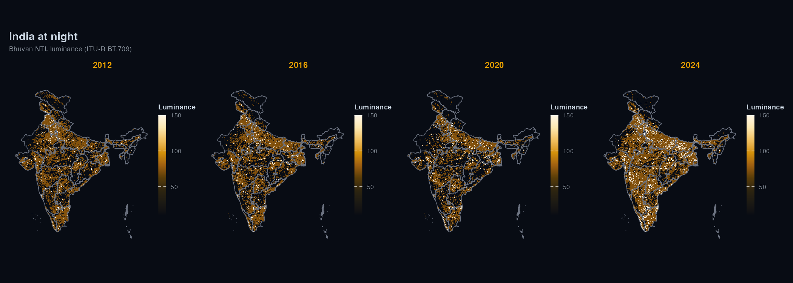

Download and analyse nighttime lights satellite data from R.
lightson supports two data sources:
- ISRO Bhuvan NTL: pre-aggregated state radiance for India (2012-2024); WMS raster tiles for any region.
- NASA VIIRS Black Marble (VNP46A4): annual composites from 2012, global coverage.
The ISRO Bhuvan NTL source does not require any authentication. VIIRS requires a free NASA Earthdata account.

Installation
pak::pak("saketkc/lightson")Usage
India state trends
library(lightson)
df <- bhuvan_stats() # all states, 2012-2024
head(df)
#> state year mean_radiance
#> 1 Andhra Pradesh 2012 22.4
bihar <- bhuvan_stats(state = "BIHAR")
plot_ntl_trend(bihar, region = "Bihar", caption = "Source: ISRO Bhuvan")Compare states
states <- c("Bihar", "Maharashtra", "Tamil Nadu", "Uttar Pradesh", "Kerala")
plot_ntl_trend(
df[df$state %in% states, ],
region = states,
subtitle = "Bhuvan NTL luminance (ITU-R BT.709)",
caption = "Source: ISRO Bhuvan NTL portal"
)Raster maps
library(sf)
library(terra)
states_sf <- get_india_admin("state") # bundled LGD/SoI boundaries, full J&K
rasters <- bhuvan_raster("IND", years = 2022, bbox_pad = c(0, 0, 0, 3.5))
plot_ntl_map(rasters[["2022"]], polygons = states_sf, dark = TRUE)
plot_ntl_map(rasters[["2022"]], polygons = states_sf, palette = "bhuvan")District-level panel
districts <- sf::read_sf("https://bharatviz.org/India-bhuvan-districts.geojson")
rasters <- bhuvan_raster(districts, years = 2018:2023)
panel <- extract_panel(rasters, districts, id_col = "district_name")
head(panel)
#> region_id year mean_radiance n_pixels
#> 1 Adilabad 2018 14.2 3821
plot_ntl_trend(panel, region = c("Mumbai", "Delhi", "Chennai", "Bengaluru"))bhuvan_raster() accepts any sf object (including your own shapefile/geojson).
VIIRS
VIIRS gives physical radiance in nW/cm^2/sr, which is useful when you need calibrated values or coverage outside India.
Getting a token:
- Create a free account at https://urs.earthdata.nasa.gov
- Accept the MERIS and Sentinel EULAs under Profile > EULAs
- Go to Profile > Generate Token and copy the
EDL-...string - Add it to
~/.Renviron:EARTHDATA_TOKEN=EDL-xxxxxxxxxxxxxxxxxxxx
# read EARTHDATA_TOKEN from environment
token <- earthdata_token()
rasters <- ntl_download("viirs", region = "IND", years = 2020:2023, token = token)
panel <- extract_panel(rasters, get_india_admin("state"), id_col = "state_name")
plot_ntl_trend(panel, region = c("Bihar", "Maharashtra"))You can also set EARTHDATA_USERNAME and EARTHDATA_PASSWORD in ~/.Renviron instead and earthdata_token() will fetch the token for you.
Units and comparability
Bhuvan WMS rasters are RGB visualisation tiles. bhuvan_raster() converts them to ITU-R BT.709 luminance (0.2126R + 0.7152G + 0.0722B). The values are dimensionless and can be used for trend analysis, but not in physical radiance units. Don’t mix them with VIIRS radiance in a regression without normalising first.
Bhuvan NTL data from 2024 onwards uses VNP46A4 Collection 2.0; 2012-2023 uses Collection 1.0. The two collections use different calibration algorithms, so estimates aren’t directly comparable across that boundary. lightson warns automatically when a request spans both.